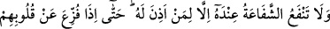
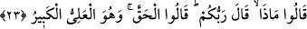

23. Allah’ın huzurunda, kendisinin izin verdiği kimselerden başkasının şefâati
fayda vermez. Nihayet onların yüreklerinden korku giderilince: “Rabbiniz ne
buyurdu?” derler. Onlar da: “Hak olanı buyurdu. O, yücedir, büyüktür.” derler.
“Allah’ın huzurunda, kendisinin izin verdiği kimselerden başkasının şefâati fayda
vermez.” Şefâat, başkasından başkası için af veya lütuf taleb etmektir. Yâni şefâat eden
şefâat edilenin azabdan kurtuluşu ya da sevabının artması talebiyle şefâatçi olmaktadır.
Bunun için kişinin kendisi için yaptığı duâya şefâat denilmez. Ümmetin Hz. Peygamber
(s.a.)’e duâ etmesi ve O’nun için Allah’tan vesîle makamını istemesine de şefâat
denilmez. Çünkü şefâat edenin şefâat edilenden daha üstün olması ya da şefâat edilenin
âciz olması şarttır. Her ikisi de burada mevcud değildir.
Müşriklerin “Bunlar, Allah katında bizim şefâatçilerimizdir.” (Yûnus, 10/18)
diyerek iddia ettikleri gibi Allah’ın huzurunda O’nun izni olmadan doğrudan şefâat
yoktur. Çünkü Allah Teâlâ: “İzni olmadan O’nun katında kim şefâat edebilir?” (el-
Bakara, 2/255) buyurmaktadır.
Âyette şefâatin olmayacağı değil faydasının olmayacağı ifâde buyrulmuştur. Bu
müşriklerin şefâatin meydana gelmesinden kasdettikleri şeyin (putların şefâatiyle
Allah’ın kendilerini bağışlamasının) olmayacağını açıklamak içindir.
Şefâat makamına hak kazanan peygamberlerden, meleklerden ve benzerlerinden şefâat
konusunda kendisine izin verilen kimseler dışında hiçbir durumda şefâat meydana
gelmez. Böylece kâfirlerin şefâatten tamamen mahrum oldukları ortaya çıktı. Putları
cihetinden şefâatten mahrum olmaları, aklı olmayan ve konuşamayan cansız varlıklara
şefâat konusunda izin verilmesinin imkânsızlığı zarûretinden dolayı onlar için izin
olmadığının âşikâr olması sebebiyledir. Taptıkları meleklere gelince onlara verilen izin
şefâati hak edenlere şefâat etmekle sınırlıdır. Çünkü Allah Teâlâ: “Rahmân’ın izin
verdiklerinden başkaları konuşmazlar; konuşan da doğruyu söyler.” (en-Nebe’,
78/38) buyurmaktadır. Kâfirler için şefâatte bulunmanın doğru sözden uzak olduğu
açıktır.
Ya da şefâate hak kazanan şefâatçilerin şefâati, şefâat edilmeye müstehak olanlar için
ve onlar hakkında izin verilenler dışında hiçbir durumda fayda vermez. Onların dışında
şefâat edilmeye müstehak olmayanlara ise -şefâatin varlığı ve şefâatçilerden sâdır
olduğu farz edilse bile- şefâat asla fayda vermez. Çünkü bu kimselere onlara ve hatta
başkalarına şefâat etme konusunda izin verilmemiştir. Bu durumda nassın ibâresiyle
müşriklerin şefâatçilerin şefâatinden, nassın delâletiyle de putların şefâatinden mahrum
olacakları sâbit olmaktadır. Çünkü onlar şefâate muhtaç bazı kimselere şefâat etmeye
muktedir olanlar cihetinden şefâatten mahrum olunca, şefâat etmekten âciz olan putlar
cihetinden şefâatten mahrum olmaları daha uygundur.